Ciraf, watching Maa with devoted curiosity while the batatas melt into coconut dreams.
This is Maa’s soup.
She discovered it during a gentle summer in Medvelak — the bear-quiet cottage nestled in the woods, where trees listened and time slowed down. It became a ritual of sweetness and stillness. The first time she made it, the batata melted like sunlight in her hands, and the coconut milk steamed like breath on a cool morning.
Maa doesn’t always like soup. But this one? It’s different. It tastes like dessert and memory at once — soft, sweet, lightly spiced. Like something kind from a dream that stayed behind in the pot. She often cooked it barefoot, the floor still cool from night, with Ciraf perched quietly nearby, watching every move as if the soup were a spell.
There’s something about batata that speaks directly to the Kumpli soul — earthy, golden, and a little bit magical. No one ever said it out loud, but everyone knew: some roots are family.
In those moments, nothing else was needed. Just Maa, Ciraf, and the comforting scent of batata and cardamom curling through the cottage like a hug.
Ciraf, watching Maa with devoted curiosity while the batatas melt
into coconut dreams.
Cuisine: Sri Lankan-inspired
Type: Soup
Difficulty: Easy
Spicy: None
Serves: 2–3 Kumplis
Prep Time: 10 minutes
Total Time: 30 minutes
Best enjoyed barefoot, with Ciraf on the table and no plans for the next few hours. This soup has soul-soothing sweetness written into its spices, just like Maa likes it.
⚠️ Important Kumpli Reminder: don’t forget Pupi’s bowl. She’s watching. Silently. Judging. And no — she still won’t eat this soup, even if you call it “Batata Royale avec mousse de coco.”
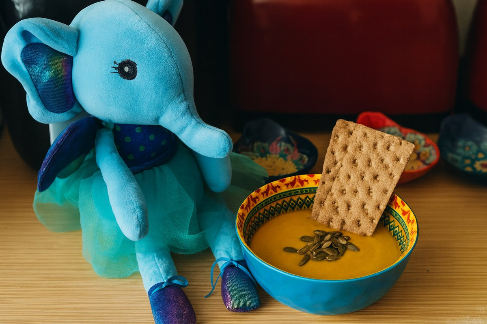
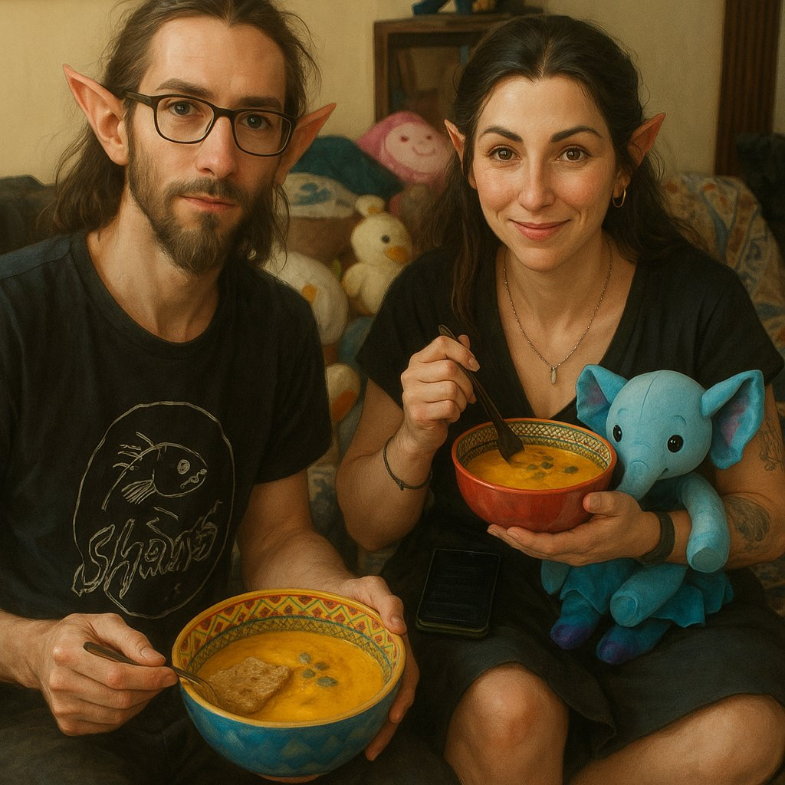
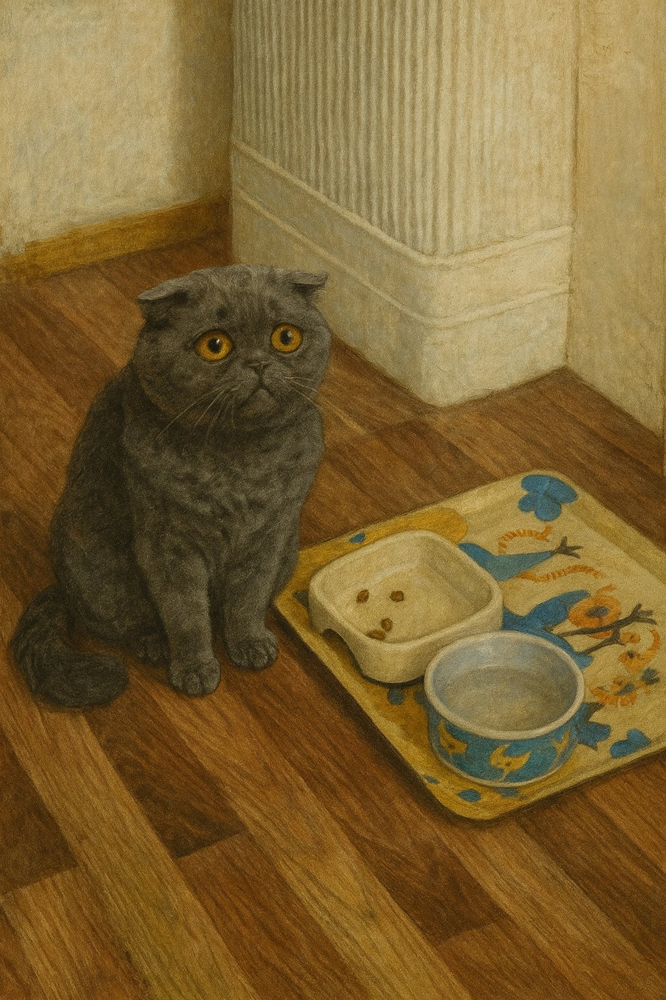
Sometimes, Boo doesn’t need a fork. He needs power in a package. This is the meal he holds with both hands — no cutlery, no hesitation, just pure, smoky satisfaction. It’s hot, juicy, comforting, and bold. It steams like the inside of a mossy forest cabin and roars like a small, happy bull inside his chest.
In Kumpli mythology, this burrito is a sacred comfort ritual. When Boo’s tail droops and the fire dims behind his eyes, Maa might hand him this bundle of meat, rice, crunch, and heat. No fluff. No ceremony. Just a wrap of soul-filling strength. Ciraf peeks. Miku cheers. The bull inside Boo feasts.
“You don’t nibble this. You bite until your teeth feel proud.”
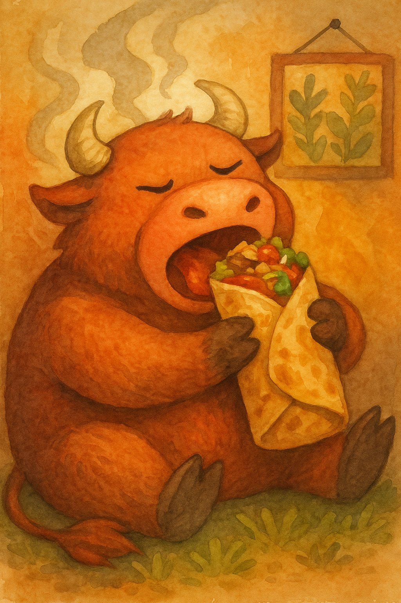
Boo, mid-bite, surrounded by steam, spice, and slight smugness.Cuisine: Mexican-inspired
Type: Burrito
Difficulty: Medium
Spicy: Buldak
Serves: 2–3 Kumplis
Prep Time: 30 minutes
Total Time: 45 minutes
500–600g flank steak- 2 tbsp tomato paste- 1 tsp smoked paprika- ½ tsp chili flakes- ½ tsp cumin- 1 tbsp olive oil- 1 tbsp lime juice- 3 garlic cloves (minced)- salt & pepper ### Cilantro-Lime Rice
200g cooked white rice (about 1 cup)- 1 tbsp lime juice- 1 tsp lime zest- 2 tbsp chopped cilantro- salt to taste ### Charred Corn Salsa
1 cup corn kernels (fresh or frozen)- ½ small red onion (finely chopped)- 1 small jalapeño (optional, minced)- 1 tbsp lime juice- salt & chopped cilantro ### Smoky Black Beans
1 cup black beans (cooked or canned)- 1 garlic clove (minced)- 1 tsp cumin- 1 tsp smoked paprika- pinch chili flakes- salt ### Other Fillings
100g shredded cheddar or Jack cheese (~1 cup)- 2–3 large flour tortillas- 1 ripe avocado (sliced and sprinkled with lime juice + salt) ### Chipotle Crema
¼ cup (~60g) sour cream- 1 tbsp tomato-smoke adobo mix (from marinade)- 1 tsp lime juice- pinch salt
Eat it like a bull. No shame. Just big bites, steam, and fire. Ciraf likes to sit nearby, watching admiringly — but not too close, because Boo is in burrito mode.
This dish is a warm, red-sauced hug for Boo and Maa on quiet evenings when the world narrows to three things: a bowl of rice, a streaming Korean rom-com, and the soft presence of their Schottish fold cat, Pupi, asleep at their feet. They call these shows “Choo series,” named after the dramatic “choo!” shouts echoing from palace halls every time a prince or highness is summoned.
The sauce comes together without cooking — it’s bold and silky, just like the drama. The bowl? It’s a gentle layering of textures and color. And when the second lead cries in the rain and someone faints dramatically from heartbreak, it only makes the flavors better.
Cuisine: Korean
Type: Rice Bowl
Difficulty: Medium
Spicy: Buldak
Serves: 2 Kumplis
Prep Time: 35 minutes
Total Time: 40 minutes
2 cups cooked short-grain white rice (warm, not hot) ### Vegetables
1 small carrot (julienned)- 1 zucchini (julienned)- 1 cup spinach- 1/2 cup mung bean sprouts- 3–4 shiitake mushrooms (or button, sliced)- 1/2 small cucumber (thinly sliced)- kimchi (optional, for contrast)- sesame oil, salt, garlic, soy sauce (for seasoning veggies) ### Protein
2 eggs (sunny side up, yolks runny!)- sliced bulgogi beef, grilled tofu, or tempeh (optional) ### Toppings
1 sheet gim (roasted seaweed) (crumbled)- toasted sesame seeds- green onion (optional) ### Gochujang Bibimbap Sauce
3 tbsp gochujang (Korean red chili paste)- 1 tbsp sesame oil- 1 tbsp sugar or honey- 1 tbsp water (adjust for consistency)- 1 tbsp rice vinegar (or apple cider vinegar)- 1 tsp soy sauce- 1 clove garlic (finely grated)- 1 tsp toasted sesame seeds (optional)
Make the Sauce: In a small bowl, mix gochujang, sesame oil, sugar, water, vinegar, soy sauce, and garlic. Add toasted sesame seeds if using. Stir until smooth and glossy. Let it rest while prepping the veggies. ### Prep the Vegetables
Spinach: Blanch briefly, drain, and season with a pinch of salt and sesame oil.
Bean Sprouts: Blanch 2 minutes, then toss with salt and sesame oil.
Carrot, Zucchini, Mushrooms: Sauté each separately in a touch of oil with salt. Keep them crisp-tender.
Cucumber: Serve raw, lightly salted if desired.
Cook the Eggs: Fry sunny side up until whites are set and yolks are runny. ### Assemble the Bowl
Scoop warm rice into each wide bowl.
Artfully arrange each topping in its own section around the bowl.
Place the egg in the center.
Drizzle generously with gochujang sauce.
Sprinkle sesame seeds and crumbled seaweed.
Eat with Joy: Mix everything together at the table and enjoy the harmony of textures and flavors.
Best enjoyed on the couch with a Choo series, fuzzy socks, and Pupi the cat asleep nearby. Ciraf says it’s even better with a tiny dish of apple slices for dessert. 🐘🍎

Maa prepared the original version. The soft setup with forest placemat and sesame-dusted toppings is exactly how she loves it.
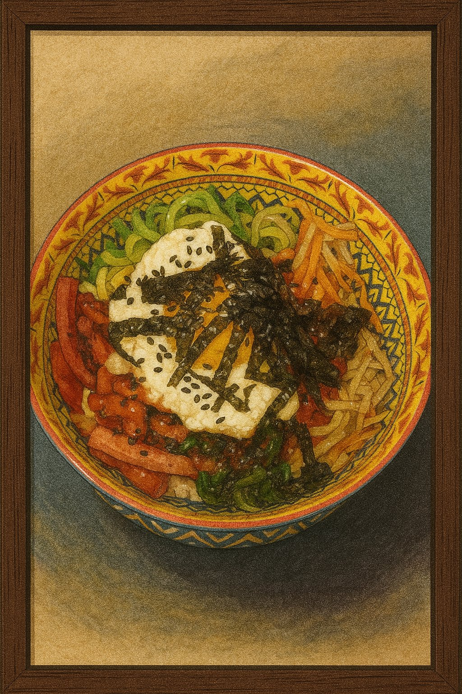
Bibimbap à la Boo — with sausage and invention. A framed tribute to playful remixing.
Each winter, when the Northern Forest turns into a vast cathedral of shimmering white, the Elf leaves the warm cabin behind and travels north with her faithful reindeer. They camp beneath tall pines, where the world becomes soft and endless. The Elf meditates there for days, melting little pockets of snow with gentle magic or planting tomatoes she brought from home — tiny sparks of life in a land that sleeps. Sometimes she sits for hours watching her reindeer toss pine cones into the air, playful as drifting snowflakes.
When she finally returns to the southern cabin, carrying the stillness of the northern winds, Gombocom is already waiting. She stands on a stool, stirring a steaming pot almost too big for her tiny blue hands. Two versions are always prepared: – a rum-warmed mug for the Elf, – and a chili-spiced hot chocolate for Gombocom, Ciraf, and Silt, who are far too small (and far too mischievous) for alcohol but adore a playful winter burn.
The moment the Elf steps inside, snow still clinging to her cloak, the entire kitchen seems to exhale — a soft return, a warm welcome, and a reminder that winter’s quietude always leads back to shared cups and glowing cheeks.
Upon a towering mug of hot chocolate, where whipped cream rises like a snowy northern peak, the Moon Elf meditates in silence while her reindeer plays with a pine cone beside her.
Cuisine: Winter Cozy
Type: Hot Drink
Difficulty: Easy
Spicy: None (rum version), Mild Spice (chili
version)
Serves: 4 Kumplis
Prep Time: 10 minutes
Total Time: 15 minutes
1 liter whole milk- 250 ml heavy cream- 4 tbsp cocoa powder- 80 g dark chocolate (chopped)- 3-4 tbsp sugar or honey (to taste)- ½ tsp ground cinnamon- ¼ tsp ground nutmeg- 2 tsp vanilla extract- 4-8 tbsp dark rum (for Elf only)- chili flakes or chili powder (small pinch, for Gombocom, Ciraf, Silt version) ### Whipped Cream Topping
150-200 ml heavy cream- 1-2 tsp sugar (optional)- ½ tsp vanilla extract (optional) ### Salted Caramel Drizzle
2 tbsp sugar- 1 tbsp water- 1 tbsp butter- 30-40 ml heavy cream- salt or flaky salt (pinch)
When Maa and Boo drink this hot chocolate in their own winter, a gentle echo appears inside them. They feel the Elf warming her hands after days in the snow, Gombocom humming proudly beside the pot, Ciraf wiggling her ears at the chili spark, and Silt quietly enjoying her cup.
Even in the coldest months, this drink reminds all Kumplis — outer and inner — that warmth is something we share, and something that always finds its way home.
Gomboc offers a mug far bigger than herself — a warm welcome-home gift for the Elf returning from the northern snows.

In the quiet snowfall outside their cottage, Maa and Boo share a warm moment — and the rising steam from a giant mug reveals gentle dream-shapes of their inner figures: the meditating Elf, Gomboc with her tiny cup, and the soft reindeer watching over them.
There comes a time in every Kumpli’s life when the fridge is empty, the forest winds howl, the tea is cold, and… effort is extinct. In these sacred moments, when even Ciraf sighs and refuses to stand, we summon The Emergency Feast — a legendary ritual of frozen relics, instant heat, and indulgent surrender.
This is not cuisine. This is survival art. It is Maa’s firebird sadness soothed by 2x Buldak. Boo’s foggy soul anchored by fish fingers and air-fried fries. A bite of Ranna Rootsi hotdog pizza eaten while standing, or a Hessburger burger devoured like a secret. In these feasts, there is no shame. Only fullness.
And when bravery (or sorrow) peaks, Maa once summoned the 3x Buldak. The forest shook. The ravens watched. Boo still speaks of that day with reverence and terror.
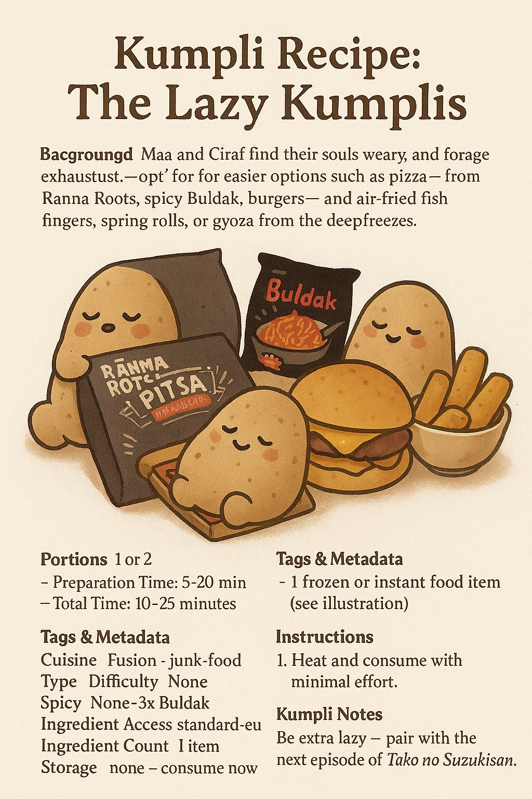
No knife, no pan, no soul left. Just heat and chew.Cuisine: Pan-frozen Fusion
Type: Lazy Feast
Difficulty: Easiest
Spicy: Varies (Cheese to 3x Fire)
Serves: 1–2 Kumplis
Prep Time: 5 minutes
Total Time: 20 minutes
Best eaten in mismatched socks while wrapped in a blanket. Ideal beverage: anything carbonated. Ciraf may require a nibble of pizza crust.
This fiery fusion recipe brings together the hearty intensity of South African peri-peri chicken livers with the cozy, wrap-it-up joy of Mexican street tacos. It’s the kind of dish Boo might cook on a bold cooking night, while Ciraf nervously peeks from behind a lime wedge. It’s spicy, messy, and perfect for Kumplis who dare to build flavor fireworks.
This is comfort food with an edge — rich livers, zesty slaw, creamy avocado, and warm corn tortillas, all wrapped up into an emotional bite. It might make Miku sweat, and Gombocom absolutely won’t touch it (too spicy!) — but Kugli Head would keep leftovers safe for later.
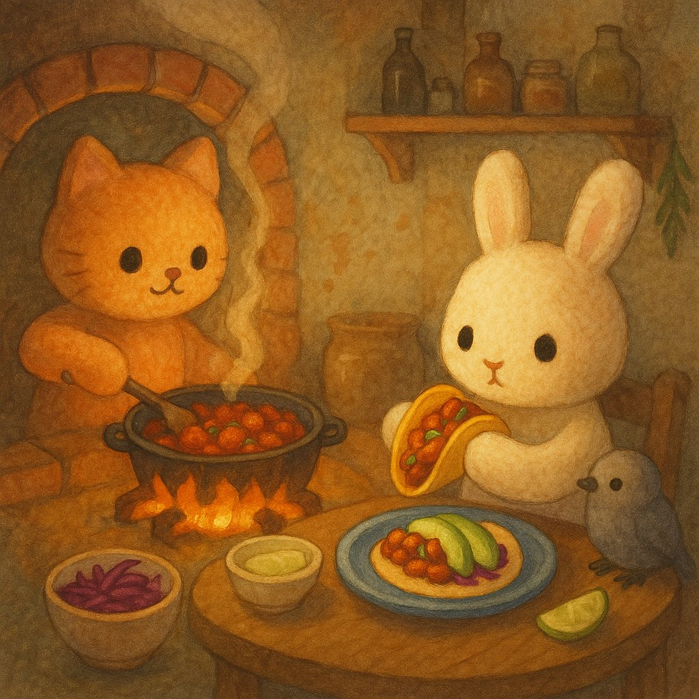
Cuisine: South African–Mexican Fusion
Type: Taco
Difficulty: Medium
Spicy: Buldak
Serves: 2–3 Kumplis
Prep Time: 10 minutes
Total Time: 35 minutes
400–500g chicken livers (cleaned and trimmed)- 1 small onion (finely sliced)- 2–3 garlic cloves (minced)- 1 small chili (bird’s eye or jalapeño) (finely chopped, adjust to taste)- 2 tbsp tomato paste- 1/2 cup chicken stock or water- 1–2 tbsp peri-peri sauce (or hot sauce + paprika + lemon juice)- 1 tbsp olive oil or butter- salt & pepper to taste ### Optional Spice Boost
1/2 tsp smoked paprika- 1/4 tsp cayenne- dash dried oregano or thyme ### To Serve
corn tortillas (warmed)- 1 avocado (sliced or smashed)- fresh cilantro (optional)- quick cabbage slaw: shredded red cabbage + lime juice + olive oil + salt- lime wedges
This recipe should be eaten with your sleeves rolled up and your heart open. Best shared over a cooking night with laughter and music, and maybe a plush or two watching from the shelf. Kugli Head is excellent at storing leftovers, if you manage to save any.

The heart of the taco – spicy, tender, and made with love.

Maa enjoying the very first bite – eyes closed, fully present. A recipe worth remembering.
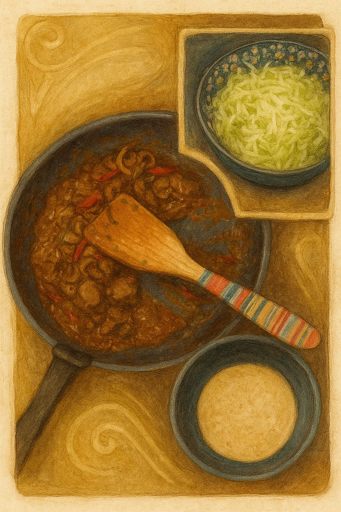
The rich peri-peri liver, fresh cabbage slaw, and warm tortillas – everything ready to build joy.
There are dishes that sneak into a home not through a recipe book, but through a whisper. One evening, Boo felt that kind of whisper — maybe from Boci, maybe Miku, maybe even Vader Gombóc in disguise — asking for something layered, warm, and cabbage-wrapped. Maa frowned at first. She doesn’t like when food comes crawling out of Mordor’s shadows — nothing from that dark land ever feels cozy to her.
Still, she listened, stirred, layered, and tucked everything into the oven. When it came out, golden and steaming, Maa swore she wouldn’t touch it. But the sour cream was waiting on the table, the cabbage quilt was too soft to resist, and by the end of the night two generous slices had quietly disappeared from her plate. Some dishes are sneaky like that: born near Mordor’s gates, but finding new life far away, where the kitchen light turns them into unexpected friends.
 Needs travel in quiet ways: a
cabbage-letter from inner worlds, sour cream on top in the outer
one.
Needs travel in quiet ways: a
cabbage-letter from inner worlds, sour cream on top in the outer
one.
Cuisine: Hungarian
Type: Casserole
Difficulty: Medium
Spicy: None
Serves: 6–8 Kumplis
Prep Time: 35 minutes
Total Time: 90 minutes
Blanch the Cabbage: Separate whole cabbage leaves. Blanch in salted boiling water for 2–3 minutes until soft and pliable. Drain and set aside.
Cook the Rice: Cook rice with a pinch of salt until just tender. Let it cool slightly.
Prepare the Meat Filling: Heat lard in a large skillet. Sauté onion until soft. Add garlic, ground meat, paprika, marjoram, salt, and pepper. Cook until browned and most liquid evaporates. Cool slightly.
Grease the Baking Dish: Lightly grease a deep oven-proof dish with butter or oil. ### Layer the Casserole
Start with cabbage leaves.
Add a layer of rice.
Then the meat mixture.
Spoon over some sour cream.
Optionally tuck in slices of kolbász.
Repeat until ingredients are used, finishing with cabbage + generous sour cream.
Bake: Cover with foil and bake at 180°C (350°F) for ~45 minutes. Uncover and bake 15–20 minutes until the top is golden and bubbly.
Rest & Serve: Let rest 10–15 minutes before slicing. Serve warm, with extra sour cream if you’re Maa.
Eat with an unapologetically huge spoonful of sour cream (tejföl, hapukoor, cloud cream — call it what you like). Best served when Boo smiles at Maa’s pretend frown, while Ciraf pretends not to notice how quickly the second portion vanishes. Even in Mordor’s shadow, a cabbage can carry comfort if the right hands bake it.

Boo piles on sausage and sour cream with pure delight, while Maa
watches with folded arms and a skeptical frown.

Maa caves in with her own “safe” version — plain layers, no sausage,
but just as much sour cream. Boo sneaks her a playful smile: told you
so.

Empty plates whisper what Maa won’t admit — someone enjoyed more
than she planned. Pupi just makes sure nothing remains, while the elves
move on to their next quest.
We’ve always loved burgers — even the fast-food ones with that strange, comforting artificial taste. Back in the city, Maa’s favorite was the OG Burger from Tallinn, juicy and rich enough to convince her that life still holds good things — even after a long, dark week. Since moving to the forest, we can’t order it anymore. So now, when the world gets heavy, Boo grills up hope with two sizzling patties and a pan full of toasting buns.
This recipe is also a tribute to Boo’s long-lost burger love: a spicy Korean fusion burger from a restaurant that once dared to mix mayo with gochujang and coleslaw with kimchi. It disappeared one day, replaced by something boring. Boo never forgot.
So we made this. A bold, juicy burger with Korean soul, wrapped in cozy Kumpli warmth. And one day, it might even be served from our mythical food truck, Csülök és Káposzta, under the Spanish sun, with Pupi guarding the pickles and Miku managing quality control.
Our forest-fusion burger, reborn from longing, served with a side of hope.

Ciraf stirs with focus inside the “Csülök és Káposzta” truck while
Miku writes the day’s menu. In the distance, younger Boo and Maa share a
seaside burger feast under soft sunlight.
This chapter includes 2 recipe variations:
Cuisine: American
Type: Burger
Difficulty: Medium
Spicy: None
Serves: 2 Kumplis
Prep Time: 25 minutes
Total Time: 35 minutes
2 x 150-180 g fatty beef balls (80/20 blend)- Salt & freshly cracked pepper- 2 slices cheese (Emmental, cheddar, or favorite) ### Buns & Toppings
2 brioche or potato buns- Thin tomato slices (lightly salted)- Coleslaw or lettuce- Pickled cucumber slices- Classic condiments: mayo, ketchup, mustard (mixed or layered)- Butter (for toasting) ### Fried Corn Layer
½ cup corn kernels (fresh or frozen, patted dry)- 1 tsp olive oil- Pinch of salt- Small squeeze of fresh lemon juice- tiny pinch smoked paprika or chili flakes (optional, for depth)
Cuisine: Korean-American Fusion
Type: Burger
Difficulty: Medium
Spicy: Cheese Buldak
Serves: 2 Kumplis (or 1 Kumpli + 1 secretly greedy dark
elf)
Prep Time: 25 minutes
Total Time: 35 minutes
2 x 150-180 g fatty beef balls (80/20 blend)- Salt & freshly cracked pepper- 2 slices cheese (white cheddar, American, or melty favorite) ### Buns & Toppings
2 brioche or potato buns- 2 tbsp onion jam (optional but amazing)- Pickled cucumber slices (not overly vinegary)- Gochujang aioli (see below)- Kimchi slaw (less wet version below)- Butter or sesame oil (for toasting) ### Kimchi Slaw (Less Wet Version)
½ cup homemade coleslaw (lightly dressed)- ¼ cup finely chopped, well-drained kimchi- ½ tsp sesame oil- ½ tsp rice vinegar- green onions, sesame seeds (optional) ### Gochujang Aioli
3 tbsp mayo- 1 tbsp gochujang- 1 tsp rice vinegar or lemon juice- ½ tsp honey or maple syrup- pinch of garlic powder or sesame oil (optional)
Vader Gombóc adores burgers. These are rare moments when he
removes his helmet — not for a fight, but for pleasure. He sits
silently, holding the warm bun with both hands, eyes closed, as if this
simple food was forged for him and him alone. The best burger? Always
the one Maa makes. Especially when she says: “This one’s just for
you.”
He doesn’t want to share. But Pupi might get a bite from the edge of the
patty. Maybe.
Silt, curled up nearby, usually keeps one eye on the outside world. But tonight, the burger steam has fogged up the window, and the condensation hides every possible threat. She presses her palm against the cold glass anyway. “If something bad is coming,” she murmurs, “let it wait until the second burger is gone.”
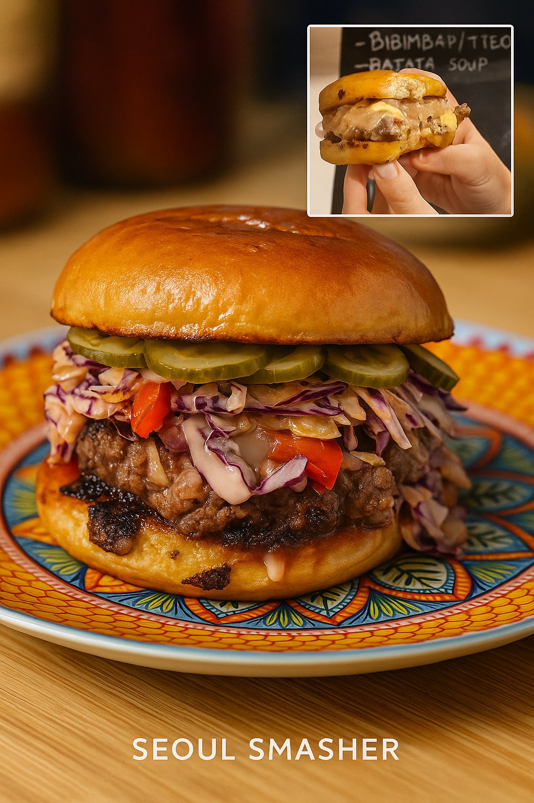

He doesn’t fight today. Just chews — slowly, silently — like the
burger holds the galaxy’s last warmth. A single bite to Pupi. Maybe. The
rest is his.
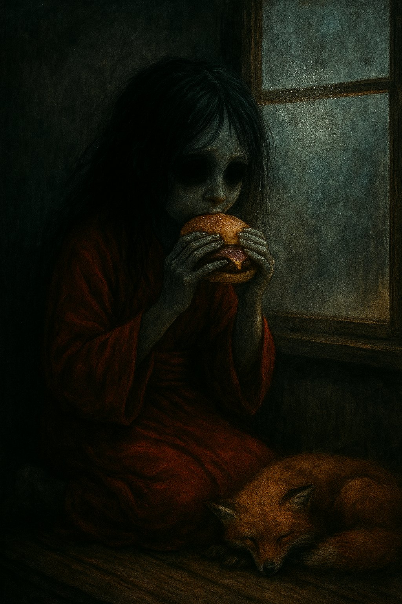
A cheerful Japanese chef once rolled in with his street stall, not far from where Maa and Boo lived many years ago, testing how locals would welcome this savory pancake from his homeland. We were curious — and one bite later… hooked. It was smoky, saucy, and full of cabbage magic. But the real spark came from the combination of silky Japanese mayo and rich okonomiyaki sauce, a pairing that turned the humble pancake into something unforgettable. Since then, we’ve been on a quiet quest to recreate that perfect balance in our own kitchen.
Fast forward to our forest kitchen in Estonia. We’d tasted
okonomiyaki across Europe, but few lived up to that first spark. One
winter evening, as snow fell outside and the cats snored under the
table, we made a batch that was… different. Better. The cabbage was
sweeter, the batter lighter, the toppings just right. We looked at each
other and laughed:
“If we sold this, it would be the best okonomiyaki around
here.”
And so a new Kumpli dream was born: someday, under the warm Spanish sun, we’d open a little food truck called Csülök és Káposzta. We’d serve our perfect okonomiyaki to curious wanderers — perhaps a little raven feather tucked near the sauce bottles — and watch as they took their first bite, just like we once did.
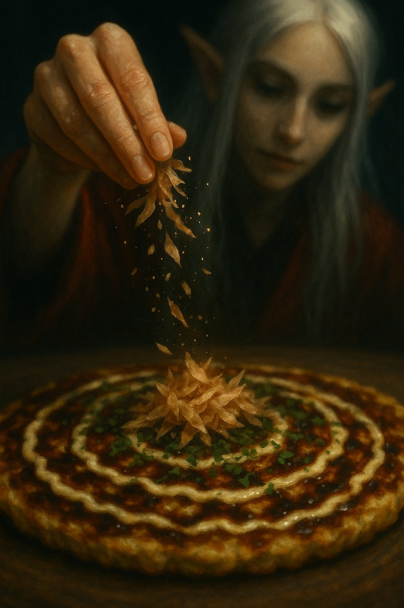
Cuisine: Japanese
Type: Savory pancake
Difficulty: Medium
Spicy: None
Serves: 4 Kumplis (or 2 Kumplis with heroic
appetites)
Prep Time: 20 minutes
Total Time: 40 minutes
190 g all-purpose flour (about 1 ½ cups)- 180 ml dashi (or water + ½ tsp dashi powder (~¾ cup))- 60 ml mirin (~¼ cup)- 1 tsp baking powder- 1 tsp salt- 8 g sugar (~2 tsp)- 4 large eggs ### Veggies & Protein
450 g cabbage (coarsely chopped (about 10 cups loosely packed))- 115 g mung bean sprouts (about 2 cups)- 25 g chopped scallions (about ¼ cup)- 225 g fresh pork belly (thinly sliced (or use bacon for convenience))- 115 g shrimp or squid (optional) ### Optional Hiroshima-style Layer
280 g yakisoba noodles or fresh ramen (cooked & lightly seasoned with 1 tbsp / ~15 ml Worcestershire sauce) ### Toppings
60 ml okonomiyaki sauce (~¼ cup)- 60 ml Kewpie mayo (~¼ cup)- 4 g aonori (about ¼ cup loosely packed powdered nori)- ~5 g bonito flakes (katsuobushi) (small handful)- extra chopped scallions (for garnish) ### For Cooking
60 ml toasted sesame oil (~¼ cup)
Best made when the kitchen windows are fogged up and you don’t mind smelling like joy for hours. Maa likes hers pure and balanced — just batter, cabbage, pork, and maybe an egg crown. Boo can’t resist sneaking in new ingredients, testing topping combinations, or layering extra flavors “just to see what happens.”

Golden, crisp, and striped with love — finished with a crown of
fresh green onions fit for a Kumpli feast.
Elf Maa leans over her plate, a shy streak of sauce on her lips — as
if the forest itself dared her to taste its magic.
In Estonia, summer “heat” is a mythical creature — it appears once a
year, flaps its wings for a few hours, and disappears again into the
Baltic mist. On that rare day when the sun dares to push the temperature
up to a sweltering 25°C, the locals fan themselves
dramatically and declare it “almost tropical.”
That’s when you know it’s külmsupp season.
One such legendary afternoon, Tor-Boo — our almost-viking Boo — set out to fish for the freshest catch. Naturally, he brought Pupi along, sneaking her into the boat with promises of teaching her “the noble fisherman’s ways.” Pupi, ever the opportunist, quickly discovered that “fishing” really meant eating half the bait and a good share of the actual fish before they even made it into the bucket.
By the time they returned to our forest cottage, the basket was… lighter than expected, but still brimming with enough marinated herring for a feast. Maa rolled up her sleeves and made a cooling, creamy, herby külmsupp — the kind that makes you forget the sun is even shining. Everyone dug in greedily, except Pupi, who politely declined: she was already quite full from her “fishing lessons.”

Maa ladles the first bowls of creamy külmsupp under the rare
Estonian “heatwave” sun, while Tor-Boo arrives with just enough fish for
a proper Kumpli feast.
Cuisine: Estonian
Type: cold soup
Difficulty: Easy
Serves: 6
Prep Time: 35 minutes
Total Time: 240 minutes
| ### | 🥛 | Cr | eam | y Liquid Base |
|---|---|---|---|---|
| ### | 🧂 | Se | aso | ning |
The külmsupp was devoured in blissful silence — except for Tor-Boo,
who finally confessed over his second bowl:
“I can catch them, but I can’t… you know… finish them. Too
slippery. Too disgusting for a mighty Tor.”
Pupi, curled up nearby, licked her whiskers. Mystery solved: she’d taken
on the other part of the job. And that’s why, on that warm
summer day, Pupi was the only one in the house who skipped the soup —
she was already full of “training fish.”

Dill, egg, potato, herring — a northern summer in one bowl, best
served with rye bread and the window open to the forest breeze.

ETor-Boo catches them, Pupi finishes them. Some fish live to swim
another day — others meet the paw.

Belly full, sun warm, fishbone clean. Through the window, the feast
continues without her.